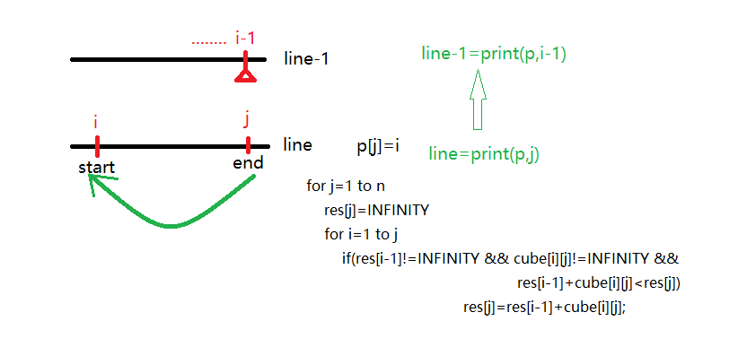
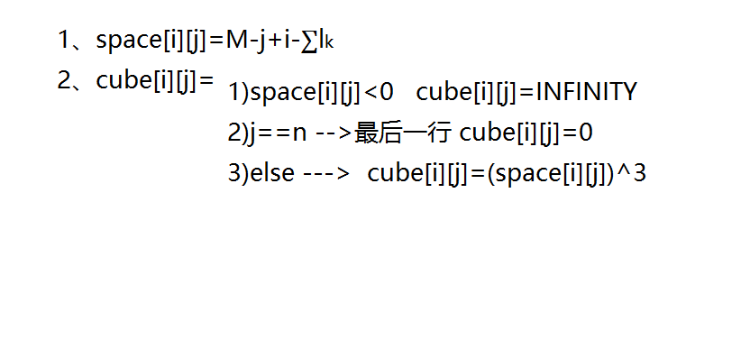
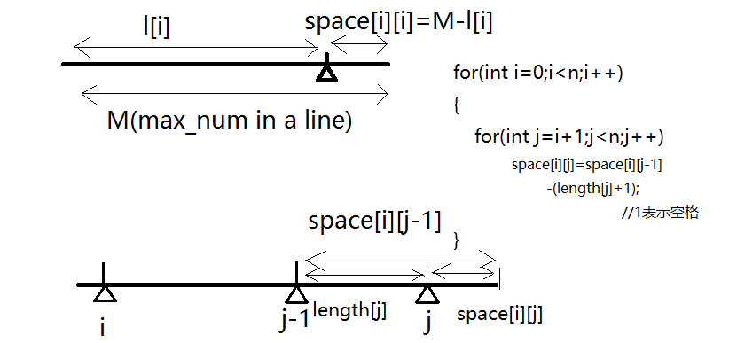
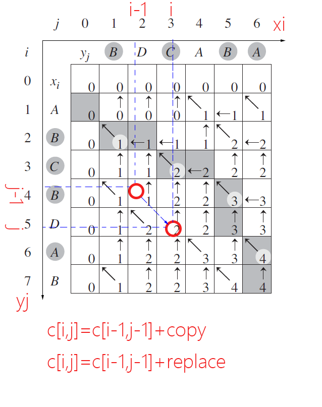
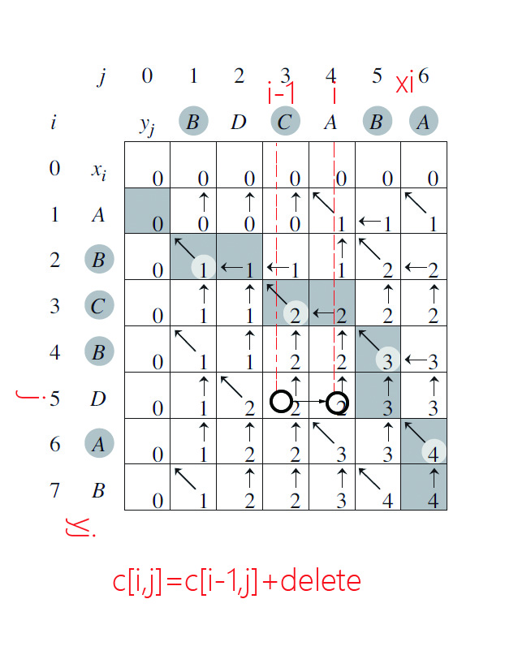
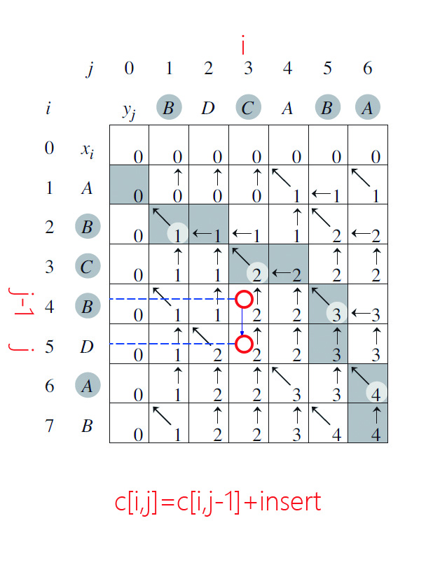
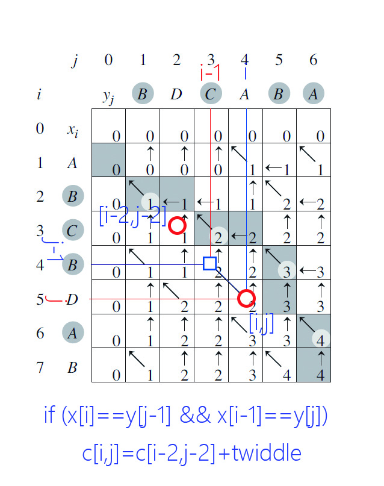
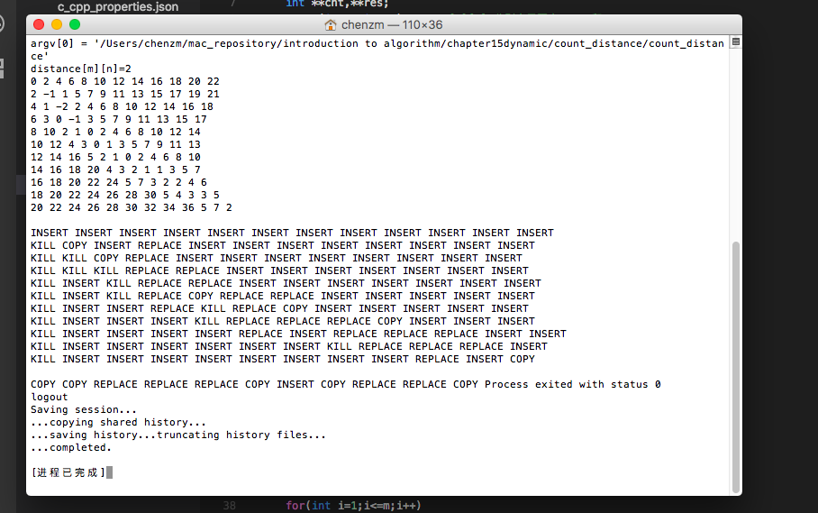

整齐打印 使用等宽字符打印一段文本。输入文本为n个单词的序列，单词长度为l 1 , l 2 , ⋯ l n l_1,l_2, \cdots l_n l 1 , l 2 , ⋯ l n M a x n u m Maxnum M a x n u m i i i j ( i ≤ j ) j(i \leq j) j ( i ≤ j ) M − j + i − ∑ k = i j l k M-j+i-\sum_{k=i}^jl_k M − j + i − ∑ k = i j l k
算法分析：



实现过程：
.h 1 2 3 4 5 6 7 8 9 10 11 12 13 14 15 16 17 18 19 20 21 22 23 24 25 26 27 28 29 30 31 32 33 34 35 36 37 38 39 40 41 42 43 44 45 46 47 48 49 50 51 52 53 54 55 56 57 58 59 60 61 62 63 64 65 66 67 68 69 70 71 72 73 74 75 76 77 78 79 80 81 82 83 84 85 86 87 88 89 90 91 92 93 94 95 96 97 98 99 100 101 102 103 using namespace std; int get_lines(int solution[],int j,string number[]); void (int length[],string number[],int n,int Maxnum) { int i,j; //保存空格数 int **space; space=new int *[n+1]; for (int i=0;i<=n;i++) { space[i]=new int [n+1]; } //保存立方值 int **cube; cube=new int *[n+1]; for (int i=0;i<=n;i++) { cube[i]=new int [n+1]; } //用于保存解决方案 int *solution=new int [n+1]; //初始化获取space[][]的值 for (int i=1;i<=n;i++) { space[i][i]=Maxnum-length[i-1]; //这里space[i][]表示第几个数？length[i-1]对应的是下标 for (int j=i+1;j<=n;j++) space[i][j]=space[i][j-1]-length[j-1]-1; } //获取cube的值，整齐打印是依据cube的值来确定打印距离 for (i=1;i<=n;i++) { for (j=1;j<=n;j++) { if (space[i][j]<0) cube[i][j]=infinity; else if (j==n && space[i][j]>=0) cube[i][j]=0; else cube[i][j]=space[i][j]*space[i][j]*space[i][j]; } } //动态规划过程，将结果存储在res数组中 int *res=new int [n+1]; res[0]=0; for (int j=1;j<=n;j++) { res[j]=infinity; for (int i=1;i<=j;i++) { if (res[i-1]!=infinity && cube[i][j]!=infinity && (res[i-1]+cube[i][j]<res[j])) { res[j]=res[i-1]+cube[i][j]; solution[j]=i; //i为当前行的第一个元素 } } } get_lines(solution,n,number); //释放内存 delete[] res; delete[] solution; for (int i=0;i<=n;i++) delete[] cube[i]; delete[] cube; for (int i=0;i<=n;i++) delete[] space[i]; delete[] space; } int get_lines(int solution[],int j,string number[]) //j为当前行的最后一个元素下标 { int k; int i=solution[j]; if (i==1) //表示第一个元素 k=1; else k=get_lines(solution,i-1,number)+1; //递归 cout<<"current line number is : " <<k<<" "; for(int l=i;l<=j;l++) cout<<number[l-1]<<" "; //当前行的第l个元素，str下标为l-1 cout<<endl; return k ;}
.cpp 1 2 3 4 5 6 7 8 9 10 11 12 13 14 15 16 int main() { int n=10; //10个单词 int Maxnum=8; //一行可以容纳最多8个字符 string number[n]={"abc" ,"def" ,"gh" ,"polq" ,"cs" ,"opaqe" ,"klfgh" ,"t" ,"asd" ,"th" }; int length[n]={0}; for (int i=0;i<n;i++) { length[i]=number[i].size(); } (length,number,n,Maxnum); return 0; }
编辑距离 算法分析 



状态转移函数 r e s ( i , j ) = min { r e s ( i − 1 , j − 1 ) + copy x[i]=y[i] r e s ( i − 1 , j − 1 ) + replace x[i]!=y[j] r e s ( i − 2 , j − 2 ) + twiddle i , j > = 2 and x[i]==y[j-1] and x[i-1]==y[j] r e s ( i − 1 , j ) + delete other r e s ( i , j − 1 ) + insert other min 0 ≤ i ≤ m { r e s ( i , n ) } + kill i==m and j==n res(i,j) = \min \begin{cases} res(i-1,j-1) + \text{copy} & \text{x[i]=y[i]} \\ res(i-1,j-1)+ \text{replace} & \text{x[i]!=y[j]} \\ res(i-2,j-2)+ \text{twiddle} & i,j>=2 \text{ and x[i]==y[j-1] and x[i-1]==y[j]} \\ res(i-1,j) + \text{delete} & \text{other} \\ res(i,j-1)+ \text{insert} & \text{other} \\ \min\limits_{0 \leq i \leq m} \{res(i,n)\}+ \text{kill} & \text{i==m and j==n} \end{cases} r e s ( i , j ) = min ⎩ ⎪ ⎪ ⎪ ⎪ ⎪ ⎪ ⎪ ⎪ ⎪ ⎪ ⎨ ⎪ ⎪ ⎪ ⎪ ⎪ ⎪ ⎪ ⎪ ⎪ ⎪ ⎧ r e s ( i − 1 , j − 1 ) + copy r e s ( i − 1 , j − 1 ) + replace r e s ( i − 2 , j − 2 ) + twiddle r e s ( i − 1 , j ) + delete r e s ( i , j − 1 ) + insert 0 ≤ i ≤ m min { r e s ( i , n ) } + kill x[i]=y[i] x[i]!=y[j] i , j > = 2 and x[i]==y[j-1] and x[i-1]==y[j] other other i==m and j==n
分析方法与“最长公共子序列”问题分析的方法类似。
count_distance.h 1 2 3 4 5 6 7 8 9 10 11 12 13 14 15 16 17 18 19 20 21 22 23 24 25 26 27 28 29 30 31 32 33 34 35 36 37 38 39 40 41 42 43 44 45 46 47 48 49 50 51 52 53 54 55 56 57 58 59 60 61 62 63 64 65 66 67 68 69 70 71 72 73 74 75 76 77 78 79 80 81 82 83 84 85 86 87 88 89 90 91 92 93 94 95 96 97 98 99 100 101 102 103 104 105 106 107 108 109 110 111 112 113 114 115 116 117 118 119 120 121 122 123 124 125 126 127 128 129 130 131 132 133 134 135 136 137 138 139 140 141 142 143 144 145 146 using namespace std; enum {COPY,REPLACE,DELETE,INSERT,TWIDDLE,KILL,TYPE_NUM}; struct TABLE { int **cnt,**res; TABLE(int m,int n) //res[m][n] 分别表示图中x_max和y_max { cnt=new int *[m+1]; for (int i=0;i<=m;i++) cnt[i]=new int [n+1]; res=new int *[m+1]; for (int i=0;i<=m;i++) res[i]=new int [n+1]; } }; void PRINT_SOLUTION(TABLE dis,int i,int j); TABLE count_distance(char x[],char y[],int m,int n) { TABLE dis(m,n); int cost[TYPE_NUM]={-1,1,2,2,-2,1}; //初始化 dis.cnt[0][0]=0; for (int i=0;i<=m;i++) { dis.cnt[i][0]=i*cost[DELETE]; //这里不操作y，等于把x中的元素全部删除 //删除的代价就是 第几个元素×cost dis.res[i][0]=DELETE; } for (int j=0;j<=n;j++) { //这里相当于x中没有元素，y[]的值等于插入每一个新的元素 dis.cnt[0][j]=j*cost[INSERT]; dis.res[0][j]=INSERT; } //计算最优代价 for (int i=1;i<=m;i++) { for (int j=1;j<=n;j++) { dis.cnt[i][j]=0x7fffffff; if (x[i]==y[j] && dis.cnt[i-1][j-1]+cost[COPY]<dis.cnt[i][j]) { dis.cnt[i][j]=dis.cnt[i-1][j-1]+cost[COPY]; dis.res[i][j]=COPY; } if (x[i]!=y[j] && dis.cnt[i-1][j-1]+cost[REPLACE]<dis.cnt[i][j]) { dis.cnt[i][j]=dis.cnt[i-1][j-1]+cost[REPLACE]; dis.res[i][j]=REPLACE; } if (i>=2&&j>=2&& x[i]==y[j-1] && x[i-1]==y[j] && dis.cnt[i-2][j-2]+cost[TWIDDLE]<dis.cnt[i][j]) { dis.cnt[i][j]=dis.cnt[i-2][j-2]+cost[TWIDDLE]; dis.res[i][j]=TWIDDLE; } if (dis.cnt[i-1][j]+cost[DELETE]<dis.cnt[i][j]) { dis.cnt[i][j]=dis.cnt[i-1][j]+cost[DELETE]; dis.res[i][j]=DELETE; } if (dis.res[i][j-1]+cost[INSERT]<dis.cnt[i][j]) { dis.cnt[i][j]=dis.cnt[i][j-1]+cost[INSERT]; dis.res[i][j]=INSERT; } } } //此时序列y[n]的值已经完成，这个时候截取从0<=i<=m-1中最小的kill 值 //把m以后的值全部截取掉 for (int i=0;i<=m-1;i++) { if (dis.cnt[i][n]+cost[KILL]<dis.cnt[m][n]) //相当于调整res[m][n]的值 //判断从哪里开始截断？ { dis.cnt[m][n]=dis.cnt[i][n]+cost[KILL]; dis.res[m][n]=i; //从i开始截断，distance.solution[][]提供回溯的点，回溯到哪个点？ } } cout<<"distance[m][n]=" <<dis.cnt[m][n]<<" "<<endl; //输出： for(int i=0;i<=m;i++) { for(int j=0;j<=n;j++) cout<<dis .cnt[i][j]<<" " ; cout<<endl; } cout<<endl ; for (int i=0;i<=m;i++) { for (int j=0;j<=n;j++) PRINT_SOLUTION(dis,i,j); cout<<endl; } cout<<endl ; return dis; } void PRINT_sequence(TABLE dis,int i,int j) { int I,J; if (i==0 && j==0) return ; if (dis.res[i][j]==COPY || dis.res[i][j]==REPLACE) { I=i-1; J=j-1; } else if (dis.res[i][j]==TWIDDLE) { I=i-2; J=j-2; } else if (dis.res[i][j]==DELETE) { I=i-1; J=j; } else if (dis.res[i][j]==INSERT) { I=i; J=j-1; } else { I=dis.res[i][j]; J=j; dis.res[i][j]=KILL; } PRINT_sequence(dis,I,J); PRINT_SOLUTION(dis,i,j); } void PRINT_SOLUTION(TABLE dis,int i,int j) { if (dis.res[i][j]==COPY) cout<<"COPY" <<" " ; else if (dis.res[i][j]==REPLACE) cout<<"REPLACE" <<" " ; else if (dis.res[i][j]==INSERT) cout<<"INSERT" <<" " ; else if (dis.res[i][j]==TWIDDLE) cout<<"TWIDDLE" <<" " ; else cout<<"KILL" <<" " ; }
count_distance.cpp 1 2 3 4 5 6 7 8 9 10 11 using namespace std; int main() { char x[]="algorithm" ; char y[]="altruistic" ; int x_len=strlen(x),y_len=strlen(y); TABLE distance=count_distance(x,y,x_len,y_len); PRINT_sequence(distance,x_len,y_len); }
算法实现结果 
 微信
微信 支付宝
支付宝